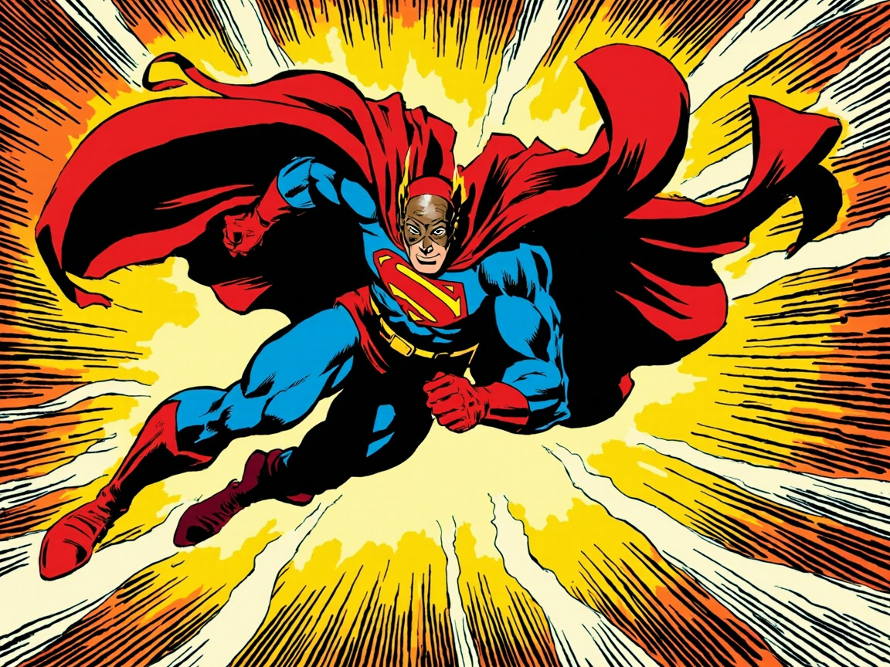
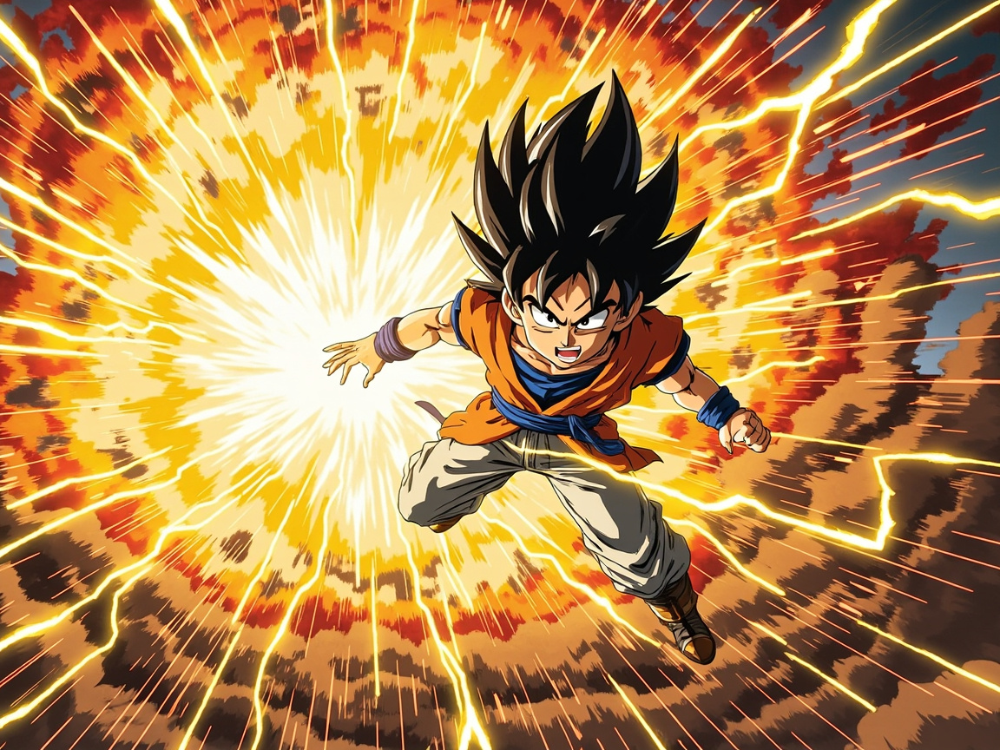
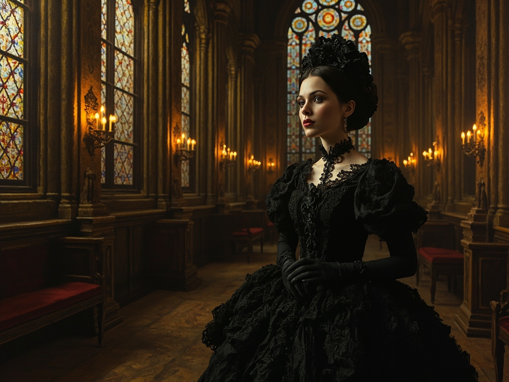

WIND COMIC
AI · SHORT-DRAMA STUDIO
一句话,
一部
短剧
。
青枫漫剧
W I N D C O M I C
AI 短剧制作台
·
不止生成
从一句话到成片
不止
生成
节奏审计
质量门禁
角色锁脸
同一个主角,
跨镜跨集
不漂移。
30+
画风任选 · 全片一致
赛博朋克
新海诚

美漫

热血番
米哈游

哥特
蒸汽波
水墨
横屏 · 竖屏
一键
双版本
。
01
横竖屏双版本 · 一键出片
02
多集系列 · 跨集主角一致
03
持久队列 · 自动批量成片
一句话,
生成你的
第一部短剧
青枫漫剧
· Wind Comic
START CREATING